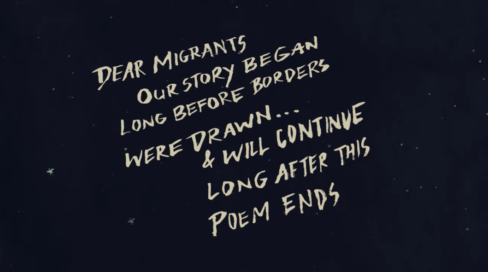
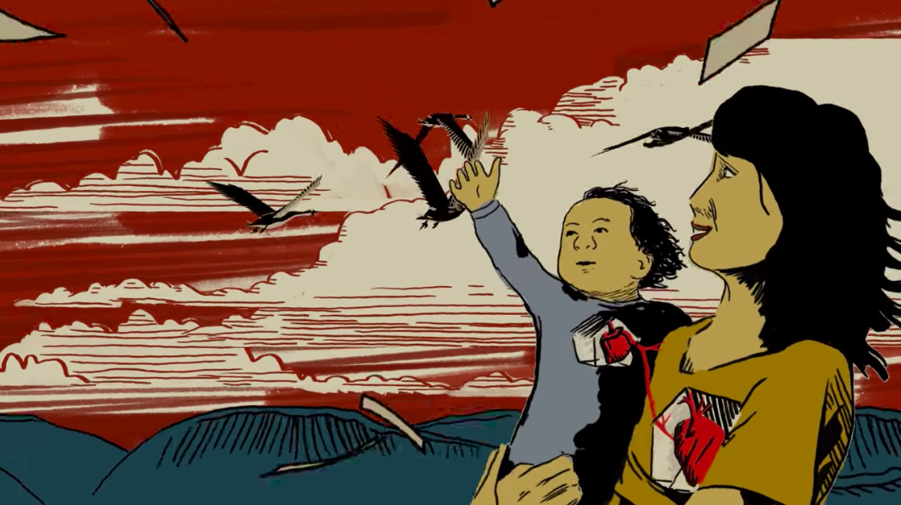
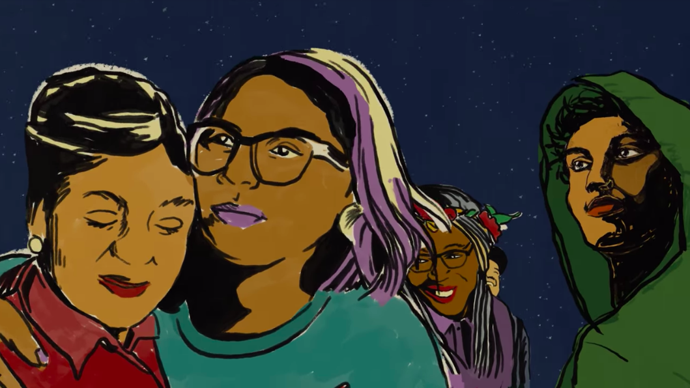
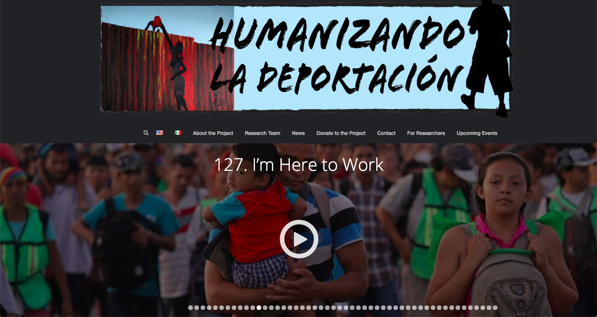

Comparative Analysis
"Migration is Natural" by Jess X Snow
  image sources: "Migration is Natural" by Jess X Snow
This project is a video created by artist Jess x Snow that uses story-telling and animation to invest the user in the artist's narrative of migration and to share the artist's message of migration as a natural process. This video serves to humanize immigrant narratives and to invite users to expand their beliefs and knowledge of immigrants and the migration process in a more personal and intimate manner. In a nation where racial tensions are high, families are being separated by government-sanctioned raids, and many are feeling unsafe due to the prominence of hate groups and racist and xenophobic ideology, this artist's take on humanizing migration and immigrants fights against these events. According to Jess X Snow, “creativity lifts us across boundary lines to a future that does not yet exist, where home is not a place bound by borders, but a place where imagination thrives.” The artist’s thoughts provides context to the purpose of this project as a platform that encourages the elimination of borders that divide not only people and families, but also creative expression and ideologies.
Although this project is simply an animation that a user watches, it still provides an immersive experience for the user. The use of eye-catching animations draws you in and allows you to become invested in the artist’s story of migration and the reasons they see migration as a natural process. This form of story-telling through spoken word also adds another element of creative expression that further drives the artist’s points about migration. I found this project to not only be eye-catching and immersive, but I truly appreciated the personal notes that the artist included. I feel that this video project is a perfect example of using story-telling and creative expression to provide users with a visually enticing journey that highlights the artist’s message of using art as a platform to uplift immigrant voices and fight against xenophobic and racist ideologies.
Humanizing Deportation

image sources: Humanizing Deportation site
Humanizing Deportation is a project started at UC Davis by a research team that hope to combat issues of xenophobia and racism by creating a digital archive of migrant stories. This project, as described by the researchers, "employs digital storytelling, a digital genre that puts control of content and production in the hands of community storytellers." This archive serves to memorialize the stories shared by immigrants and to help put a face to the issues raised by deportations. The creation of an archive of migrant stories is incredibly important, according to the research team, because of how easy it is for popular media to create "dehumanized" perspectives towards immigrant populations. The "dehumanization" of these stories by the general population has detrimental effects, and encourages harmful and dangerous ideologies to thrive and grow in our communities and in our institutions. In addition, this project goes beyond issues based on immigration and deportation and focuses on other intersections of identity such as gender, class and more.
I believe that this project is an interesting and important way of remembering migrant stories and to help the general population become more empathetic and understanding of the issues faced by migrant and diasporic communities due to the effects of racism and xenophobia. I believe heavily in the importance of story-telling in order to humanize the faces of immigrants to the general public, and to inform them that these people are important and they do not deserve to have their communities destabilized, their families divided, and their livelihoods under attack. Despite the importance of a video archive such as Humanizing Deportation, the UI of the site is not very streamlined and doesn't draw the user in as effectively. I feel that the interface could improve by using more responsive design that streamlines users' experiences no matter where they are looking at the project. Additionally, I feel that the website could work better in order to better relay the project's purpose and to call users to action by either donating to the project or by learning more to support immigrant communities. Despite these obstacles, I feel that this project's goals of archiving these stories and sharing the experiences expressed by their interviewees has a deep importance to the project I want to work on, which focuses on story and narratives in order to humanize immigrants.